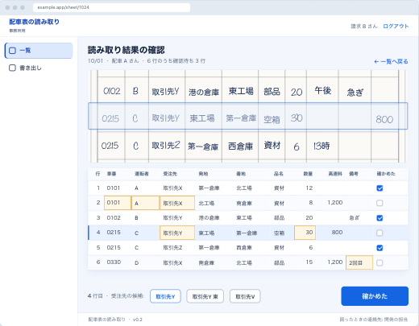

選んだ名前を覚える流れ1・2 は最初の版。3・4 が次の版の候補
1候補を出す

入る: 紙の受注先・発地・着地出る: 近い名前の候補 3 つ
しくみ最初の版
2人が選ぶ

入る: 候補 3 つ出る: 選んだ名前 (記録に残す)
人最初の版
1
3書き方ごとに覚える
| 紙の書き方 | 選んだ名前 |
|---|---|
| 取引先Y | 取引先Y 東 |
| 港倉庫 | 港の倉庫 |
入る: 紙の書き方と、選んだ名前出る: 覚えた組み合わせ
しくみ次の版
2
4次から 1 番目に出す
取引先Y 東
取引先Y
取引先V
入る: 同じ書き方出る: 覚えた名前が、候補の 1 番目
しくみ次の版
3